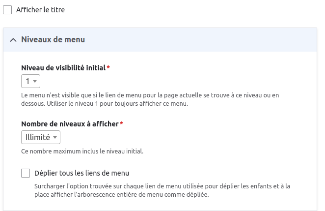
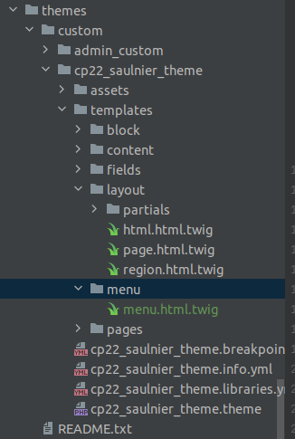
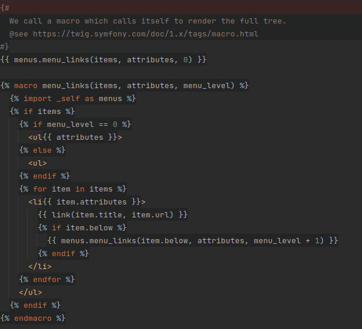
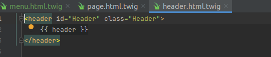
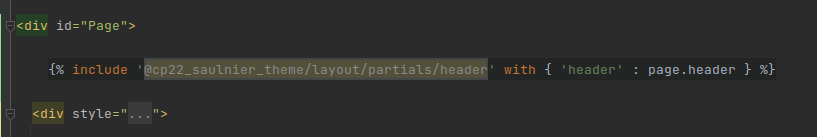
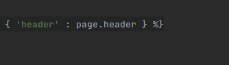
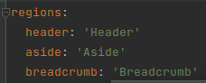
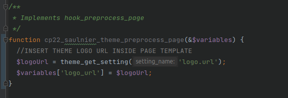
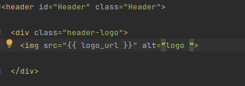

Placer le menu
Pour les menus on peut faire un setting form
on peut le modifier dans la configuration du bloc.
Ca permet d'avoir une reutilisation plus rapide des éléments. C'est quelque chose qui se construit en interne, pas forcément pour le client
ici on utilise

Dans le code
placer le block
Si notre fichier porte le meme nom que celui du theme principal, il n'y a pas besoin de respecter la meme arborescence (si il est place dans le theme de notre module.

travailler le block
De base, les éléments dans les blocks sont recursifs. Il n'est pas recommandé de les utiliser (trop complexe)
Exemple :

Les variables sur lesquels on peut travailler
Logo et favicon
On doit placer ces deux elements à la racine du theme lorsque l'on conserve la configuration de chargement dans apparence/configuration
Le logo
On peut le modifier dans Apparence/configuration
image du logo est logo.png à la racine du theme
par defaut dans -->placer le block/logo
sio personnaliser mettre le lien de l'image dans le info.yml du theme
le logo et le favicon doivent être placés à la racine du theme
le favicon
pareil que image dans Apparence/configuration
templating
Dans le fichier page.html.twig on a le header qui affichera tous les éléments du fichier header.html.twig


Placement des éléments
le header include correspond au nom du header dans les regions du info.yml

Le nom page.header correspond ainsi au "header" inscris dans info.yml

Et creer le preprocess_page dans le fichier nom_du_theme.theme contenant la declaration du logo en variable pour l'utiliser par la suite dans le twig

Puis placer le logo dans le twig
